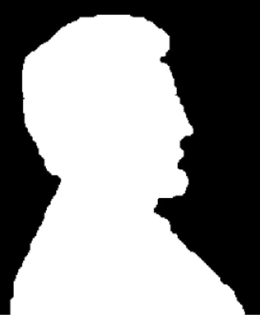

<div>
    <BlockUI :message="msg" v-if="isBlockUi"></BlockUI>
    <b-card-group deck>
        <b-card header="邊界萃取 (Boundary Extraction)">
            <p class="card-text mt-2">
                邊界萃取是一種影像處理技術，能萃取出影像邊界，其步驟如下 : 
            </p>
            <b-list-group >
                <b-list-group-item variant="secondary">在連續的原始影像內，使用3 X 3大小，像素全為0的element做Erosion，得figure 1</b-list-group-item>
                <b-list-group-item variant="secondary">將原圖與上述得到的較原圖小一號的figure 1相減，得結果</b-list-group-item>
            </b-list-group>
        </b-card>
    </b-card-group>

    <!-- 選擇檔案 -->
    <div class="contentDiv">
        <input type="file" id="imgFile" @change="imgChange" accept="jpg">
    </div>

    <!-- 原始圖像 -->
    <div class="contentDiv transformDiv">
        <canvas ref="myCanvas"></canvas>
    </div>
    <canvas ref="myCanvas2"style="display:none"></canvas>

    <!-- 轉換按鈕 -->
    <div class="contentDiv" id="controlDiv">
        <button id="unsharp" @click="next">transform</button>
    </div>

    <!-- 轉換後影像 -->
    <div class="contentDiv transformDiv">
        <canvas ref="myCanvas3"></canvas>
    </div>

    
</div>